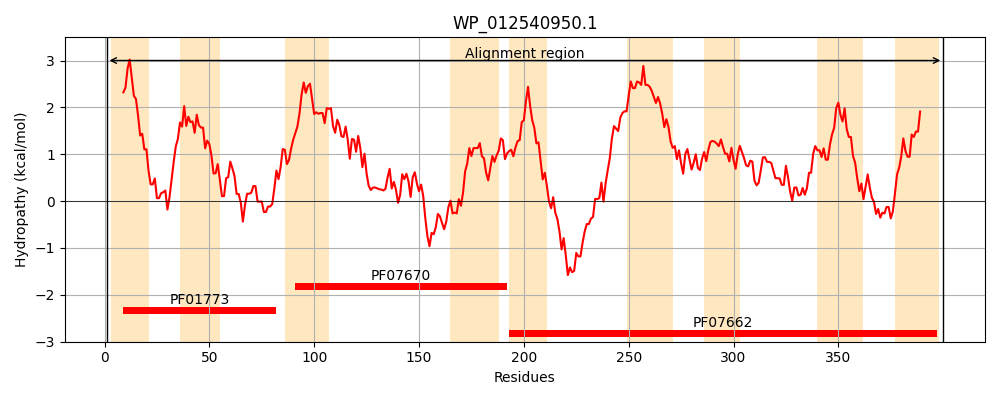
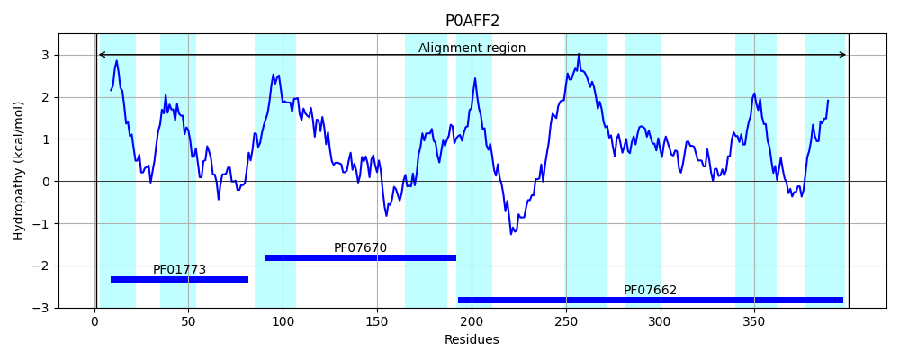
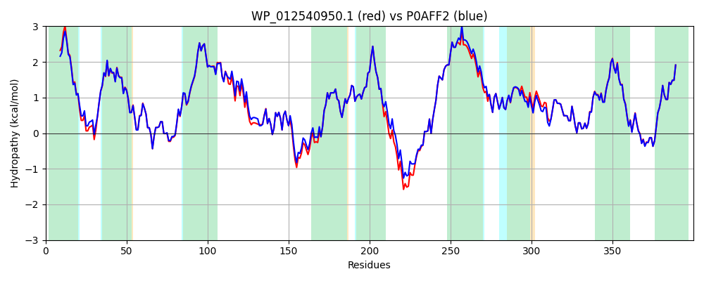

Hit Accession: P0AFF2
Hit TCID: 2.A.41.1.1
Hit Description: gnl|BL_ORD_ID|8821 gnl|TC-DB|P0AFF2|2.A.41.1.1 Nucleoside permease nupC - Escherichia coli.
Mach Len: 400
e:0.000000
Query TMS Count : 9
Hit TMS Count: 9
TMS-Overlap Score: 9.250000
Predicted Substrates:CHEBI:5584;hydron, CHEBI:7647;nucleoside
BLAST Alignment:
Score: 1888 , Bit scores: 731 bits, E-value: 0.0e+00, Alignment length: 400, Percentage identity: 94
Query: 1 MDRVLHFVLAIVVVAILALLVSHDRKKIRIRYVVQLLVIEVLLAWFFLNSDIGLGFVKGFSEMFEKLLGFANEGTNFVFGSMNDKGLAFFFLKVLCPIVFISALIGILQHIRILPIVIRAIGTVLSKINGMGKLESFNAVSSLILGQSENFIAYKDILGKMSRNRMYTMAATAMSTVSMSIVGAYMTMLQPKYVVAALVLNMFSTFIVLSLINPYRVEESEENLQMSNLHEGQSFFEMLGEYILAGFKVAIIVAAMLIGFIALISALNALFATVTGWFGYSISFQGILGYIFYPVAWVMGVPASEALQVGSIMATKLVSNEFVAMMDLQKIASTLSPRAEGIISIFLVSFANFSSIGIIAGAIKGLNEEQGNVVSRFGLKLVYGSTLVSVLSASIAALVL 400
MDRVLHFVLA+ VVAILALLVS DRKKIRIRYV+QLLVIEVLLAWFFLNSD+GLGFVKGFSEMFEKLLGFANEGTNFVFGSMND+GLAFFFLKVLCPIVFISALIGILQHIR+LP++IRAIG +LSK+NGMGKLESFNAVSSLILGQSENFIAYKDILGK+SRNRMYTMAATAMSTVSMSIVGAYMTML+PKYVVAALVLNMFSTFIVLSLINPYRV+ SEEN+QMSNLHEGQSFFEMLGEYILAGFKVAIIVAAMLIGFIALI+ALNALFATVTGWFGYSISFQGILGYIFYP+AWVMGVP+SEALQVGSIMATKLVSNEFVAMMDLQKIASTLSPRAEGIIS+FLVSFANFSSIGIIAGA+KGLNEEQGNVVSRFGLKLVYGSTLVSVLSASIAALVL
Sbjct: 1 MDRVLHFVLALAVVAILALLVSSDRKKIRIRYVIQLLVIEVLLAWFFLNSDVGLGFVKGFSEMFEKLLGFANEGTNFVFGSMNDQGLAFFFLKVLCPIVFISALIGILQHIRVLPVIIRAIGFLLSKVNGMGKLESFNAVSSLILGQSENFIAYKDILGKISRNRMYTMAATAMSTVSMSIVGAYMTMLEPKYVVAALVLNMFSTFIVLSLINPYRVDASEENIQMSNLHEGQSFFEMLGEYILAGFKVAIIVAAMLIGFIALIAALNALFATVTGWFGYSISFQGILGYIFYPIAWVMGVPSSEALQVGSIMATKLVSNEFVAMMDLQKIASTLSPRAEGIISVFLVSFANFSSIGIIAGAVKGLNEEQGNVVSRFGLKLVYGSTLVSVLSASIAALVL 400 | Protein Hydropathy Plots: |
|---|
|  |  |
Pairwise Alignment-Hydropathy Plot:
|
|---|
|  |